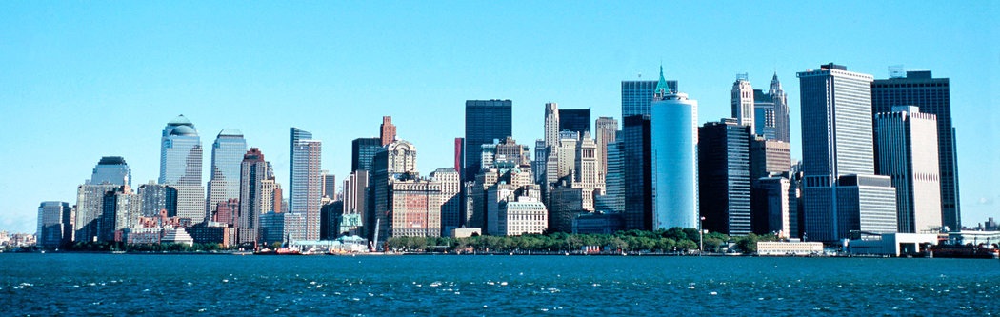

Welcome to New York

Experience the vibrant city life with landmarks like Times Square, Statue of Liberty, and Central Park. Dive into the culture with world-class museums, theaters, and restaurants.
Travel Recommendations
- Duration: 3-5 days
- Route: Start at Central Park, visit the Metropolitan Museum, head to Times Square, see a Broadway show, and end with the Statue of Liberty.
- Best Time to Visit: Spring or Autumn for pleasant weather.
- Must-See Attractions: Empire State Building, Brooklyn Bridge, One World Observatory, and the High Line.
- Cultural Spots: Museum of Modern Art, Whitney Museum of American Art, and the New York Public Library.